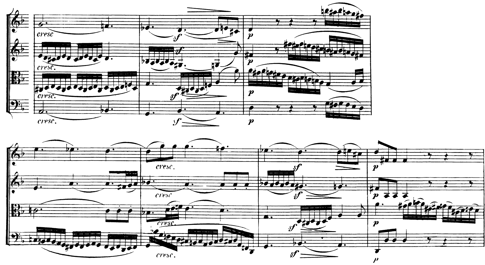

La sesta napoletana e le seste eccedenti in un basso senza numeri: come si riconoscono, come si scrivono, come risolvono. È ciò che il basso della V4 chiede in più.
Si tratta di una triade costruita sul secondo grado abbassato, il grado che caratterizza la scala minore napoletana.
D. D’Urso, Il linguaggio della musica, 3° anno, p. 94
D. D’Urso, Il linguaggio della musica, 3° anno, lezione 39, pp. 94–95 (la cadenza con sesta napoletana); 4° anno, p. 70 (gli accordi di sottodominante nel minore) · D. D’Urso, C. Bertolini, 5° anno, p. 40 (la napoletana come accordo cardine verso il VI).
Sesta napoletana (N⁶, nel libro II⁶ con il segno di abbassamento): la triade maggiore costruita sul secondo grado abbassato, «una variante dell’accordo di ii° del minore», usata «prevalentemente in primo rivolto, come l’accordo da cui deriva», con funzione di sottodominante; si presenta normalmente con il secondo grado abbassato al soprano e conduce alla dominante o alla quarta e sesta di cadenza (3° anno, p. 94). Il raddoppio migliore è quello della terza dell’accordo, che è anche la nota del basso (p. 95). In la minore: re–fa–si♭, con il re al basso.
Condotta. Il secondo grado abbassato scende: di semitono sul primo grado, se segue la quarta e sesta (si♭→la), o di terza diminuita sulla sensibile, se segue direttamente la dominante (si♭→sol♯). Il basso sale di grado alla dominante.
Far salire il si♭ al si♮: la nota abbassata ha una tendenza discendente, e il si♮ immediatamente dopo, in un’altra voce, produce anche la falsa relazione. Gli altri due errori frequenti: raddoppiare il si♭, e mettere la triade in stato fondamentale, con il si♭ al basso, che suona come una tonalità nuova invece che come una sottodominante colorata.

Nella coda dell’Adagio la stessa formula cadenzale ricorre due volte, alle bb. 83 e 87, dopo il cresc. e con lo sf. Sul sol2 del violoncello suonano sol, si♭ e mi♭: la napoletana di re minore, con la terza raddoppiata e il mi♭ al violino I. Nel secondo movimento della battuta il basso sale al si♭2 e sopra di esso compare il sol♯ del violino II: si♭–re–sol♯ è la sesta italiana, con la sesta eccedente si♭–sol♯, e la viola vi aggiunge il fa nell’ultima semicroma, toccando la sesta tedesca. Nel terzo movimento il basso arriva al la2, la dominante con il ritardo 4–3 del violino I (re–do♯), e la b. 84 (e la b. 88) chiude sulla triade di re maggiore. Il mi♭ scende al re e il si♭ al la, come vogliono le regole; il sol♯ del violino II, invece di salire al la, scende al sol♮, che diventa la settima della dominante. La sesta eccedente si♭–sol♯ si contrae così nella settima minore la–sol, come la sesta francese di Chopin nella lezione 1: in entrambi i casi la nota alzata scende di semitono cromatico e l’accordo alterato conduce a una settima di dominante invece che alla triade. La napoletana e la sesta eccedente, in Beethoven, sono due tappe della stessa salita del basso sol–si♭–la verso la dominante.
D. D’Urso, Il linguaggio della musica, 4° anno, lezione 51, Accordi di sesta aumentata, pp. 132–135 (il libro le chiama «aumentate»; «eccedente» è il termine della trattatistica italiana per lo stesso intervallo).
Origine. Le seste eccedenti «derivano dall’ornamentazione della cadenza frigia»: il basso scende di semitono dal sesto al quinto grado, e una parte superiore sale di semitono dal quarto grado alzato al quinto; dalle due spinte di semitono nasce l’intervallo di sesta eccedente fra il sesto grado e il quarto alzato (p. 132). In la minore: fa–re♯, che diverge sull’ottava mi–mi.
Sesta italiana (it⁶): tre suoni, fa–la–re♯; a quattro parti si raddoppia la tonica. È la forma alterata di una dominante applicata al V (p. 133).
Sesta tedesca (td⁶₅): fa–la–do–re♯, con la quinta giusta fa–do; enarmonicamente identica a una settima di dominante. Verso la dominante produce due quinte parallele, le «quinte di Mozart», tollerate fra le parti interne e da evitare fra le estreme; la risoluzione sulla quarta e sesta di cadenza le evita (pp. 133–134).
Sesta francese (fr⁴₃): fa–la–si–re♯, con la quarta eccedente fa–si; «forma alterata del V⁷/V con la quinta abbassata», la più dissonante delle tre (p. 134).
Scrivere la sesta tedesca con il la♭ e il fa, o con il mi♭, perché «suona come» una settima di dominante: la nota alzata si scrive diesis perché sale, e la sesta eccedente fa–re♯ si legge solo se il re♯ è scritto re♯. Il secondo errore: portare la sesta tedesca direttamente sulla dominante con la quinta fra soprano e basso, cioè con le quinte parallele fra le estreme.
All’ascolto la sesta eccedente non si riconosce dalla sonorità, che è quella di una settima di dominante o di una settima con la quinta abbassata, ma dal movimento: due voci che si allontanano di semitono sull’ottava, con il basso che scende. In Chopin il basso scende, e la voce superiore invece no (lezione 1).
Napoletana. Il quarto grado, alla fine di una frase in minore, seguito dalla dominante o dalla quarta e sesta di cadenza; da solo non distingue la napoletana dal iv o dal ii°⁶, e la scelta si fa per il colore e per la condotta del soprano. Se il quarto grado è ribattuto o tenuto, il passaggio iv–N⁶ sopra lo stesso basso (la→si♭ in una parte superiore) è la realizzazione più naturale.
Sesta eccedente. Il sesto grado del minore (o il sesto abbassato del maggiore) che scende di semitono alla dominante, o alla quarta e sesta sopra la dominante. Lo stesso basso sostiene anche il iv⁶ della cadenza frigia e il VI: la sesta eccedente è la scelta più tesa, e si giustifica in cadenza.
Nella traccia d’esame l’accordo alterato non è mai imposto dal basso: lo chiede la consegna («il basso chiede anche la napoletana e una sesta eccedente», V4), e la scelta del punto va motivata sotto la realizzazione.
Mettere la napoletana sul quarto grado di un tono maggiore senza lo scambio modale, o nel mezzo di una frase dove il basso non va alla dominante. Fuori dalla cadenza la napoletana perde la sua funzione di sottodominante e il si♭ resta senza risoluzione.
Realizza a quattro parti il basso dato. 1. Scrivi i gradi sotto il basso, con la doppia cifratura sotto l’accordo comune di ogni modulazione e una M dove la cadenza conferma il tono. 2. Il basso chiede la sesta napoletana una volta e due seste eccedenti di specie diverse: scegli il punto, scrivile con l’ortografia giusta e risolvile. 3. Sotto la realizzazione, in tre righe, motiva la scelta dei tre punti.
Insieme, 4 minuti. Le cadenze e i toni: dove il basso si ferma, quale nota alterata compare e in quale battuta. Da soli, 18 minuti. Prima i gradi, poi le voci nelle bb. 5–12; le bb. 1–4 a casa, se non c’è tempo. Correzione, 3 minuti. Sulla soluzione, battuta per battuta.
La napoletana è una sottodominante: II abbassato in primo rivolto, terza raddoppiata, il secondo grado abbassato che scende. Le seste eccedenti sono dominanti della dominante alterate: sul sesto grado, con il quarto alzato, la sesta che si allarga sull’ottava della dominante.
La battuta e la specie di ogni accordo alterato (N⁶, it⁶, td⁶₅, fr⁴₃), la nota alterata con la sua risoluzione, e il motivo della scelta del punto: la cadenza, il basso che scende o sale alla dominante.
La lezione si chiude con il solfeggio: si canta il basso dell’ora, poi il soprano della soluzione sopra il basso suonato al pianoforte, fermandosi sugli accordi alterati. La lezione seguente è di ear training: la nona, la settima diminuita, gli alterati all’ascolto.
Compiti per la prossima volta
Realizza a quattro parti il basso dato, tredici battute in sol minore, senza numerica. Il basso modula al relativo maggiore e torna. Chiede la napoletana alla b. 6, la sesta italiana alla b. 8 e la sesta tedesca alla b. 11: scrivile con l’ortografia giusta e risolvile. Sotto il basso i gradi; sotto gli accordi comuni la doppia cifratura; la M sulle cadenze che confermano un tono.
Il do3 delle bb. 5–6 porta due accordi: prima il iv, poi la napoletana; il re3 ribattuto porta la quarta e sesta e la dominante. Il mi♭ delle bb. 8 e 11 scende di semitono alla dominante: lì sta la sesta eccedente, con il do♯ che sale al re.
Sul quaderno, a matita. La foto del lavoro finito va su Classroom. Nel Workbook: apri l’esercizio C5-U6-L2-01 ↗
Compiti per la prossima volta
n. 280 e n. 281 parlato · n. 282 e n. 283 cantato · n. 284 e n. 285 ritmico
Ogni pezzo a tempo, senza fermarti: il parlato a nomi, il cantato prendendo il primo suono dalla tastiera, il ritmico battendo la pulsazione.
Scrivi la melodia sul quaderno, in chiave di violino: otto battute in 12/8, fa♯ minore. Il primo suono è fa♯. Prima il riferimento, poi tutto due volte, ogni coppia di battute due volte, il collegamento 1–4, 3–6 e 5–8, e tutto per controllare.
Il riferimento: accordo di tonica e primo suono
Il dettato · otto battute
Le sezioni (riferimento, tutto, le coppie, il collegamento) si ascoltano una per una e si ripetono quanto serve; le fasi fanno la procedura della classe, con gli annunci e le pause, da qualunque punto.
Sul quaderno scrivi in testa la sigla C5-D-U06-L2. Si corregge all’inizio della prossima lezione.
Compiti per la prossima volta
Scrivi un contrappunto di quinta specie (il contrappunto fiorito) sotto il canto fermo, in modo misolidio (finale sol): dieci battute. Comincia su una consonanza perfetta, alla cadenza la sensibile sale alla finale, niente quinte e ottave consecutive.
Sul quaderno, con la sigla C5-CP-U06-L2 in testa; la foto va su Classroom.
Realizza a quattro parti il basso senza numeri: sedici battute in 4/4, fa maggiore. Trova tu l’accordo di ogni nota (la regola dell’ottava è il punto di partenza) e scrivilo sotto; poi il soprano, poi le voci interne. Accordi che puoi usare: tutto quello studiato, e una modulazione a un tono vicino. Il basso modula: trova dove, e in quale tonalità arriva.
Sul quaderno, con la sigla C5-BD-U06-L2 in testa; la foto va su Classroom.
Armonizza a quattro parti il canto dato: sedici battute in 4/4, si♭ maggiore. Prima le cadenze, poi il basso per intero, e solo alla fine contralto e tenore. Accordi che puoi usare: tutto quello studiato, e una modulazione a un tono vicino.
Sul quaderno, con la sigla C5-CD-U06-L2 in testa; la foto va su Classroom.
Scritto: Tredici battute in sol minore con la napoletana e due seste eccedenti (Workbook, esercizio C5-U6-L2-01), sul quaderno; la foto va su Classroom. Solfeggio dal quaderno di lettura: parlato n. 280, 281; cantato n. 282, 283; ritmico n. 284, 285 (a tempo, senza fermarsi). Dettato C5-D-U06-L2 dalla pagina della lezione (sezioni da ascoltare, o le fasi della procedura guidata), sul quaderno con la sigla. Contrappunto di quinta specie sul canto fermo (C5-CP-U06-L2). Basso senza numeri da realizzare a quattro parti (C5-BD-U06-L2). Canto dato da armonizzare a quattro parti (C5-CD-U06-L2).
In classe
A nomi, a tempo, con la mano che batte. Chi si ferma riparte dalla battuta dopo.
Apri il n. 276 nel quaderno di lettura ↗ chiave di tenore · 3/4 · la maggiore
In classe
Si prende il tono dalla tastiera, si canta insieme; poi a gruppi.
Apri il n. 277 nel quaderno di lettura ↗ chiave di violino · 6/8 · fa maggiore
Apri il n. 278 nel quaderno di lettura ↗ chiave di violino · 4/4 · sol maggiore
In classe
Tutti insieme, battendo la pulsazione. Poi a file, due battute a testa.